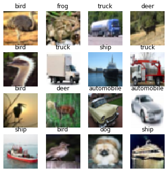
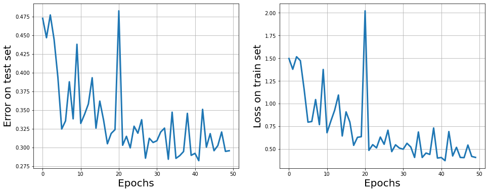

Resnet example with Flax and JAXopt.

Mathieu Blondel, Fabian Pedregosa
In this notebook, we’ll go through training a deep residual network with jaxopt.
%%capture
%pip install jaxopt flax
from datetime import datetime
import collections
from functools import partial
from typing import Any, Callable, Sequence, Tuple
from flax import linen as nn
import jax
import jax.numpy as jnp
from jaxopt import loss
from jaxopt import OptaxSolver
from jaxopt import tree_util
import optax
import tensorflow_datasets as tfds
import tensorflow as tf
from matplotlib import pyplot as plt
Flags = collections.namedtuple(
"Flags",
[
"l2reg", # amount of L2 regularization in the objective
"learning_rate", # learning rate for the Adam optimizer
"epochs", # number of passes over the dataset
"dataset", # one of "mnist", "kmnist", "emnist", "fashion_mnist", "cifar10", "cifar100"
"model", # model architecture, one of "resnet1", "resnet18", "resnet34"
"train_batch_size", # Batch size at train time
"test_batch_size" # Batch size at test time
])
FLAGS = Flags(
l2reg=0.0001,
learning_rate=0.001,
epochs=50,
dataset="cifar10",
model="resnet18",
train_batch_size=128,
test_batch_size=128)
def load_dataset(split, *, is_training, batch_size):
version = 3
ds, ds_info = tfds.load(
f"{FLAGS.dataset}:{version}.*.*",
as_supervised=True, # remove useless keys
split=split,
with_info=True)
ds = ds.cache().repeat()
if is_training:
ds = ds.shuffle(10 * batch_size, seed=0)
ds = ds.batch(batch_size)
return iter(tfds.as_numpy(ds)), ds_info
class ResNetBlock(nn.Module):
"""ResNet block."""
filters: int
conv: Any
norm: Any
act: Callable
strides: Tuple[int, int] = (1, 1)
@nn.compact
def __call__(self, x,):
residual = x
y = self.conv(self.filters, (3, 3), self.strides)(x)
y = self.norm()(y)
y = self.act(y)
y = self.conv(self.filters, (3, 3))(y)
y = self.norm(scale_init=nn.initializers.zeros)(y)
if residual.shape != y.shape:
residual = self.conv(self.filters, (1, 1),
self.strides, name='conv_proj')(residual)
residual = self.norm(name='norm_proj')(residual)
return self.act(residual + y)
class ResNet(nn.Module):
"""ResNetV1."""
stage_sizes: Sequence[int]
block_cls: Any
num_classes: int
num_filters: int = 64
dtype: Any = jnp.float32
act: Callable = nn.relu
@nn.compact
def __call__(self, x, train: bool = True):
conv = partial(nn.Conv, use_bias=False, dtype=self.dtype)
norm = partial(nn.BatchNorm,
# use_running_average=True,
use_running_average=not train,
momentum=0.99,
epsilon=0.001,
dtype=self.dtype)
x = conv(self.num_filters, (7, 7), (2, 2),
padding=[(3, 3), (3, 3)],
name='conv_init')(x)
x = norm(name='bn_init')(x)
x = nn.relu(x)
x = nn.max_pool(x, (3, 3), strides=(2, 2), padding='SAME')
for i, block_size in enumerate(self.stage_sizes):
for j in range(block_size):
strides = (2, 2) if i > 0 and j == 0 else (1, 1)
x = self.block_cls(self.num_filters * 2 ** i,
strides=strides,
conv=conv,
norm=norm,
act=self.act)(x)
x = jnp.mean(x, axis=(1, 2))
x = nn.Dense(self.num_classes, dtype=self.dtype)(x)
x = jnp.asarray(x, self.dtype)
return x
ResNet1 = partial(ResNet, stage_sizes=[1], block_cls=ResNetBlock)
ResNet18 = partial(ResNet, stage_sizes=[2, 2, 2, 2], block_cls=ResNetBlock)
ResNet34 = partial(ResNet, stage_sizes=[3, 4, 6, 3], block_cls=ResNetBlock)
We’ll now load our train and test dataset and plot a few of the training images.
# Hide any GPUs from TensorFlow. Otherwise TF might reserve memory and make
# it unavailable to JAX.
tf.config.experimental.set_visible_devices([], 'GPU')
train_ds, ds_info = load_dataset("train", is_training=True,
batch_size=FLAGS.train_batch_size)
test_ds, _ = load_dataset("test", is_training=False,
batch_size=FLAGS.test_batch_size)
input_shape = (1,) + ds_info.features["image"].shape
num_classes = ds_info.features["label"].num_classes
iter_per_epoch_train = ds_info.splits['train'].num_examples // FLAGS.train_batch_size
iter_per_epoch_test = ds_info.splits['test'].num_examples // FLAGS.test_batch_size
class_names = ['airplane', 'automobile', 'bird', 'cat', 'deer',
'dog', 'frog', 'horse', 'ship', 'truck']
mb_images, mb_labels = next(train_ds)
_, axes = plt.subplots(nrows=4, ncols=4, figsize=(6, 6))
for i in range(4):
for j in range(4):
k = i * 4 + j
axes[i, j].imshow(mb_images[k], cmap=plt.cm.gray_r, interpolation="nearest")
axes[i, j].set_axis_off()
axes[i, j].set_title(class_names[mb_labels[k]])

# Set up model.
if FLAGS.model == "resnet1":
net = ResNet1(num_classes=num_classes)
elif FLAGS.model == "resnet18":
net = ResNet18(num_classes=num_classes)
elif FLAGS.model == "resnet34":
net = ResNet34(num_classes=num_classes)
else:
raise ValueError("Unknown model.")
def predict(params, inputs, batch_stats, train=False):
x = inputs.astype(jnp.float32) / 255.
all_params = {"params": params, "batch_stats": batch_stats}
if train:
# Returns logits and net_state (which contains the key "batch_stats").
return net.apply(all_params, x, train=train, mutable=["batch_stats"])
else:
# Returns logits only.
return net.apply(all_params, x, train=train, mutable=False)
logistic_loss = jax.vmap(loss.multiclass_logistic_loss)
def loss_from_logits(params, l2reg, logits, labels):
mean_loss = jnp.mean(logistic_loss(labels, logits))
sqnorm = tree_util.tree_l2_norm(params, squared=True)
return mean_loss + 0.5 * l2reg * sqnorm
@jax.jit
def accuracy_and_loss(params, l2reg, data, aux):
inputs, labels = data
logits = predict(params, inputs, aux, train=False)
accuracy = jnp.mean(jnp.argmax(logits, axis=-1) == labels)
loss = loss_from_logits(params, l2reg, logits, labels)
return accuracy, loss
def loss_fun(params, l2reg, data, aux):
inputs, labels = data
logits, net_state = predict(params, inputs, aux, train=True)
loss = loss_from_logits(params, l2reg, logits, labels)
# batch_stats will be stored in state.aux
return loss, net_state["batch_stats"]
# Initialize solver.
opt = optax.adam(learning_rate=FLAGS.learning_rate)
# We need has_aux=True because loss_fun returns batch_stats.
solver = OptaxSolver(opt=opt, fun=loss_fun,
maxiter=FLAGS.epochs * iter_per_epoch_train, has_aux=True)
# Initialize parameters.
rng = jax.random.PRNGKey(0)
init_vars = net.init({"params": rng}, jnp.ones(input_shape, net.dtype))
params = init_vars["params"]
batch_stats = init_vars["batch_stats"]
start = datetime.now().replace(microsecond=0)
# Run training loop.
state = solver.init_state(params)
jitted_update = jax.jit(solver.update)
all_test_error = []
all_train_loss = []
for it in range(solver.maxiter):
train_minibatch = next(train_ds)
if state.iter_num % iter_per_epoch_train == iter_per_epoch_train - 1:
# Once per epoch evaluate the model on the train and test sets.
test_acc, test_loss = 0., 0.
# make a pass over test set to compute test accuracy
for _ in range(iter_per_epoch_test):
tmp = accuracy_and_loss(params, FLAGS.l2reg, next(test_ds), batch_stats)
test_acc += tmp[0] / iter_per_epoch_test
test_loss += tmp[1] / iter_per_epoch_test
train_acc, train_loss = 0., 0.
# make a pass over train set to compute train accuracy
for _ in range(iter_per_epoch_train):
tmp = accuracy_and_loss(params, FLAGS.l2reg, next(train_ds), batch_stats)
train_acc += tmp[0] / iter_per_epoch_train
train_loss += tmp[1] / iter_per_epoch_train
train_acc = jax.device_get(train_acc)
train_loss = jax.device_get(train_loss)
test_acc = jax.device_get(test_acc)
test_loss = jax.device_get(test_loss)
all_test_error.append(1 - test_acc)
all_train_loss.append(train_loss)
# time elapsed without microseconds
time_elapsed = (datetime.now().replace(microsecond=0) - start)
print(f"[Epoch {state.iter_num // (iter_per_epoch_train+1) + 1}/{FLAGS.epochs}] "
f"Train acc: {train_acc:.3f}, train loss: {train_loss:.3f}. "
f"Test acc: {test_acc:.3f}, test loss: {test_loss:.3f}. "
f"Time elapsed: {time_elapsed}")
params, state = jitted_update(params=params,
state=state,
l2reg=FLAGS.l2reg,
data=train_minibatch,
aux=batch_stats)
batch_stats = state.aux
[Epoch 1/50] Train acc: 0.546, train loss: 1.496. Test acc: 0.527, test loss: 1.553. Time elapsed: 0:00:28
[Epoch 2/50] Train acc: 0.591, train loss: 1.377. Test acc: 0.553, test loss: 1.506. Time elapsed: 0:00:32
[Epoch 3/50] Train acc: 0.559, train loss: 1.515. Test acc: 0.523, test loss: 1.692. Time elapsed: 0:00:36
[Epoch 4/50] Train acc: 0.609, train loss: 1.472. Test acc: 0.556, test loss: 1.722. Time elapsed: 0:00:40
[Epoch 5/50] Train acc: 0.694, train loss: 1.153. Test acc: 0.607, test loss: 1.522. Time elapsed: 0:00:43
[Epoch 6/50] Train acc: 0.801, train loss: 0.795. Test acc: 0.675, test loss: 1.274. Time elapsed: 0:00:47
[Epoch 7/50] Train acc: 0.807, train loss: 0.802. Test acc: 0.665, test loss: 1.385. Time elapsed: 0:00:51
[Epoch 8/50] Train acc: 0.736, train loss: 1.044. Test acc: 0.612, test loss: 1.688. Time elapsed: 0:00:54
[Epoch 9/50] Train acc: 0.830, train loss: 0.767. Test acc: 0.662, test loss: 1.560. Time elapsed: 0:00:58
[Epoch 10/50] Train acc: 0.686, train loss: 1.375. Test acc: 0.562, test loss: 2.260. Time elapsed: 0:01:02
[Epoch 11/50] Train acc: 0.863, train loss: 0.679. Test acc: 0.668, test loss: 1.628. Time elapsed: 0:01:05
[Epoch 12/50] Train acc: 0.837, train loss: 0.806. Test acc: 0.656, test loss: 1.876. Time elapsed: 0:01:09
[Epoch 13/50] Train acc: 0.809, train loss: 0.926. Test acc: 0.642, test loss: 1.988. Time elapsed: 0:01:13
[Epoch 14/50] Train acc: 0.778, train loss: 1.094. Test acc: 0.607, test loss: 2.307. Time elapsed: 0:01:16
[Epoch 15/50] Train acc: 0.882, train loss: 0.643. Test acc: 0.674, test loss: 1.807. Time elapsed: 0:01:20
[Epoch 16/50] Train acc: 0.818, train loss: 0.908. Test acc: 0.638, test loss: 2.143. Time elapsed: 0:01:24
[Epoch 17/50] Train acc: 0.848, train loss: 0.796. Test acc: 0.664, test loss: 1.951. Time elapsed: 0:01:27
[Epoch 18/50] Train acc: 0.914, train loss: 0.540. Test acc: 0.695, test loss: 1.789. Time elapsed: 0:01:31
[Epoch 19/50] Train acc: 0.893, train loss: 0.628. Test acc: 0.681, test loss: 1.884. Time elapsed: 0:01:35
[Epoch 20/50] Train acc: 0.889, train loss: 0.635. Test acc: 0.676, test loss: 1.877. Time elapsed: 0:01:38
[Epoch 21/50] Train acc: 0.648, train loss: 2.020. Test acc: 0.517, test loss: 3.239. Time elapsed: 0:01:42
[Epoch 22/50] Train acc: 0.930, train loss: 0.484. Test acc: 0.697, test loss: 1.713. Time elapsed: 0:01:46
[Epoch 23/50] Train acc: 0.911, train loss: 0.547. Test acc: 0.685, test loss: 1.844. Time elapsed: 0:01:50
[Epoch 24/50] Train acc: 0.922, train loss: 0.512. Test acc: 0.701, test loss: 1.778. Time elapsed: 0:01:53
[Epoch 25/50] Train acc: 0.892, train loss: 0.631. Test acc: 0.672, test loss: 2.050. Time elapsed: 0:01:57
[Epoch 26/50] Train acc: 0.910, train loss: 0.551. Test acc: 0.681, test loss: 1.849. Time elapsed: 0:02:01
[Epoch 27/50] Train acc: 0.874, train loss: 0.706. Test acc: 0.663, test loss: 2.015. Time elapsed: 0:02:04
[Epoch 28/50] Train acc: 0.936, train loss: 0.471. Test acc: 0.715, test loss: 1.746. Time elapsed: 0:02:08
[Epoch 29/50] Train acc: 0.910, train loss: 0.545. Test acc: 0.688, test loss: 1.774. Time elapsed: 0:02:12
[Epoch 30/50] Train acc: 0.922, train loss: 0.510. Test acc: 0.694, test loss: 1.815. Time elapsed: 0:02:15
[Epoch 31/50] Train acc: 0.923, train loss: 0.497. Test acc: 0.691, test loss: 1.727. Time elapsed: 0:02:19
[Epoch 32/50] Train acc: 0.905, train loss: 0.562. Test acc: 0.679, test loss: 1.882. Time elapsed: 0:02:23
[Epoch 33/50] Train acc: 0.918, train loss: 0.521. Test acc: 0.674, test loss: 1.917. Time elapsed: 0:02:26
[Epoch 34/50] Train acc: 0.951, train loss: 0.406. Test acc: 0.716, test loss: 1.670. Time elapsed: 0:02:30
[Epoch 35/50] Train acc: 0.878, train loss: 0.687. Test acc: 0.653, test loss: 2.112. Time elapsed: 0:02:34
[Epoch 36/50] Train acc: 0.951, train loss: 0.406. Test acc: 0.715, test loss: 1.727. Time elapsed: 0:02:37
[Epoch 37/50] Train acc: 0.935, train loss: 0.455. Test acc: 0.711, test loss: 1.719. Time elapsed: 0:02:41
[Epoch 38/50] Train acc: 0.940, train loss: 0.439. Test acc: 0.706, test loss: 1.715. Time elapsed: 0:02:45
[Epoch 39/50] Train acc: 0.868, train loss: 0.731. Test acc: 0.655, test loss: 2.109. Time elapsed: 0:02:48
[Epoch 40/50] Train acc: 0.952, train loss: 0.400. Test acc: 0.711, test loss: 1.708. Time elapsed: 0:02:52
[Epoch 41/50] Train acc: 0.949, train loss: 0.406. Test acc: 0.708, test loss: 1.702. Time elapsed: 0:02:56
[Epoch 42/50] Train acc: 0.960, train loss: 0.371. Test acc: 0.718, test loss: 1.654. Time elapsed: 0:02:59
[Epoch 43/50] Train acc: 0.873, train loss: 0.691. Test acc: 0.649, test loss: 2.030. Time elapsed: 0:03:03
[Epoch 44/50] Train acc: 0.942, train loss: 0.423. Test acc: 0.700, test loss: 1.730. Time elapsed: 0:03:07
[Epoch 45/50] Train acc: 0.918, train loss: 0.518. Test acc: 0.682, test loss: 1.846. Time elapsed: 0:03:10
[Epoch 46/50] Train acc: 0.948, train loss: 0.407. Test acc: 0.705, test loss: 1.731. Time elapsed: 0:03:14
[Epoch 47/50] Train acc: 0.947, train loss: 0.404. Test acc: 0.698, test loss: 1.761. Time elapsed: 0:03:18
[Epoch 48/50] Train acc: 0.908, train loss: 0.543. Test acc: 0.679, test loss: 1.927. Time elapsed: 0:03:21
[Epoch 49/50] Train acc: 0.942, train loss: 0.418. Test acc: 0.705, test loss: 1.818. Time elapsed: 0:03:25
[Epoch 50/50] Train acc: 0.945, train loss: 0.407. Test acc: 0.705, test loss: 1.772. Time elapsed: 0:03:29
fig, (ax1, ax2) = plt.subplots(1, 2, figsize=(16, 6))
ax1.plot(all_test_error, lw=3)
ax1.set_ylabel('Error on test set', fontsize=20)
ax1.grid()
ax1.set_xlabel('Epochs', fontsize=20)
ax2.plot(all_train_loss, lw=3)
ax2.set_ylabel('Loss on train set', fontsize=20)
ax2.grid()
ax2.set_xlabel('Epochs', fontsize=20)
plt.show()
